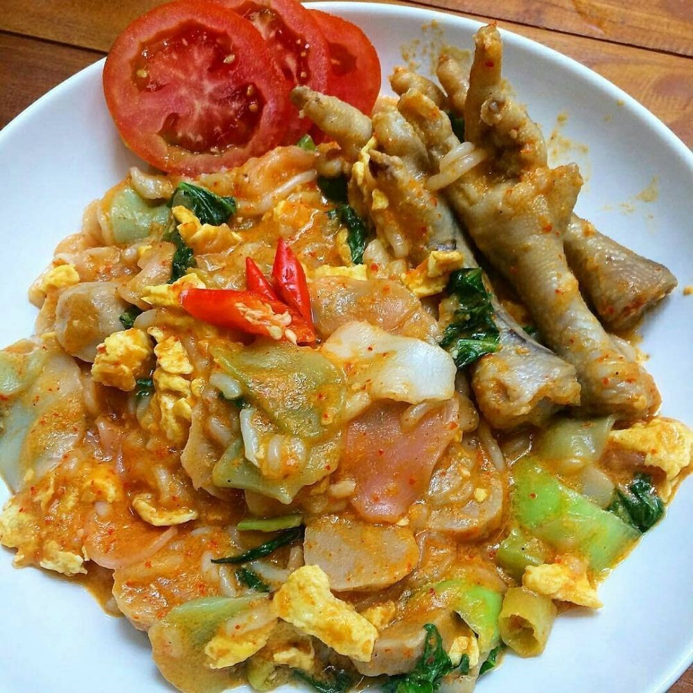

Seblak Bandung

Siapa sih yang ga tau Seblak? Sekarang, Seblak ini sudah menjadi makanan hits kekinian yang digemari oleh banyak orang selain Bakso Aci
dan Ayam Geprek Mozarella.
Anak muda khususnya generasi milenials pasti tahu dong Seblak itu apa?
Seblak adalah salah satu makanan khas Indonesia yang berasal dari
Jawa Barat dengan komposisi utama kerupuk basah dan tambahan bahan
lainnya.
Tak heran jika banyak yang mengenalnya sebagai Seblak Bandung.
Penasaran dengan seblak Bandung seperti apa dan juga resep
Seblak Bandung? Yuk simak ulasannya berikut ini!
-
- 2 genggam kerupuk (redam di air biasa 2 jam).
- 200 g ceker.
-
- 4 siung bawang merah.
- 3 siung bawang putih.
- 3 butir kemiri(boleh di kurangi klo ga suka creamy).
- 1 ruas jari kencur.
- 8 cabe merah keriting.
- 6 cabe rawit pedas.
- 5 cabe rawit hijau (untuk irisan).
- Gula, garam, kaldu bubuk, lada bubuk.
- 1 bonggol sawi sendok.
- 1 batang daun bawang.
- Air kaldubrebusan ceker (sesuai selera).
- 2 butir telur yang sudah di orak arik.
-
- Tumis bumbu hingga matang.
- Tambahkan bakso, ceker, kerupuk yg sudah di rendam, garam, gula, lada, saus tiram, kaldu bubuk. Masak sebentar.
- Tambah air kaldu, masak hingga mendidih.
- Masukkan daun sawi, daun bawang, dan cabe rawit iris, masak hingga sayuran matang.